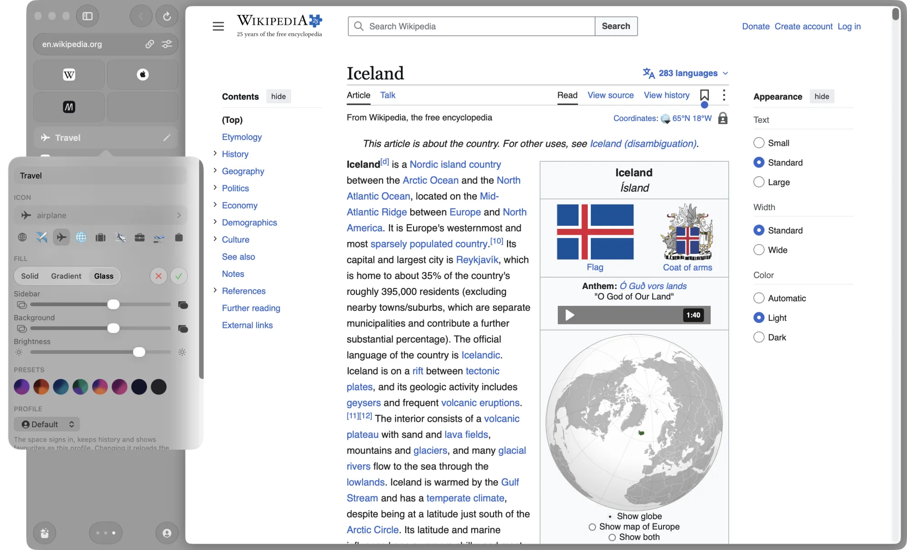
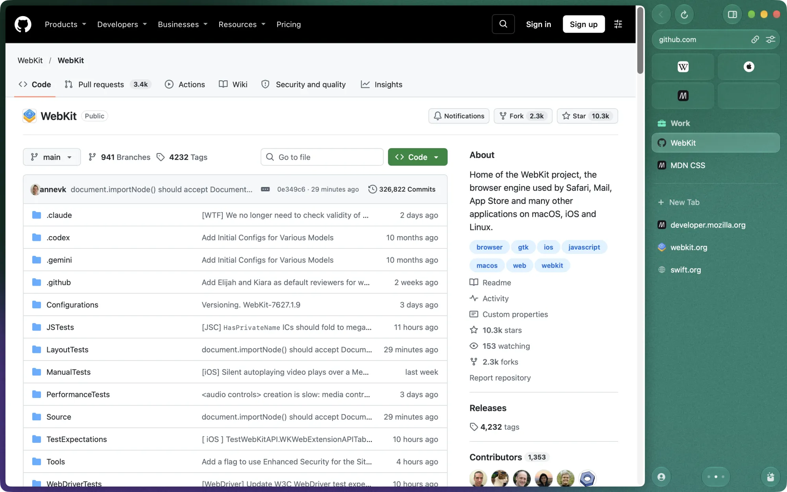
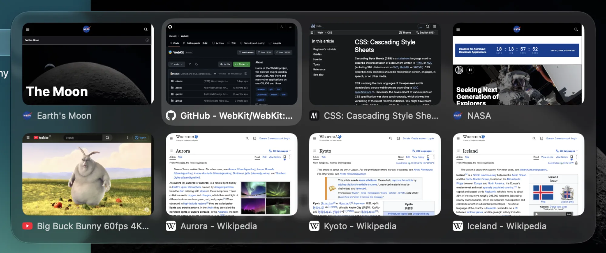
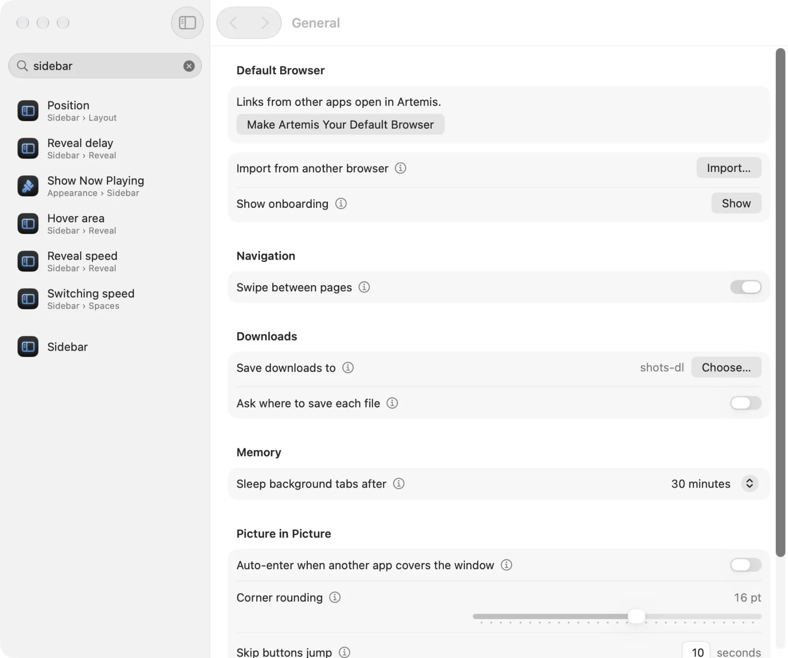
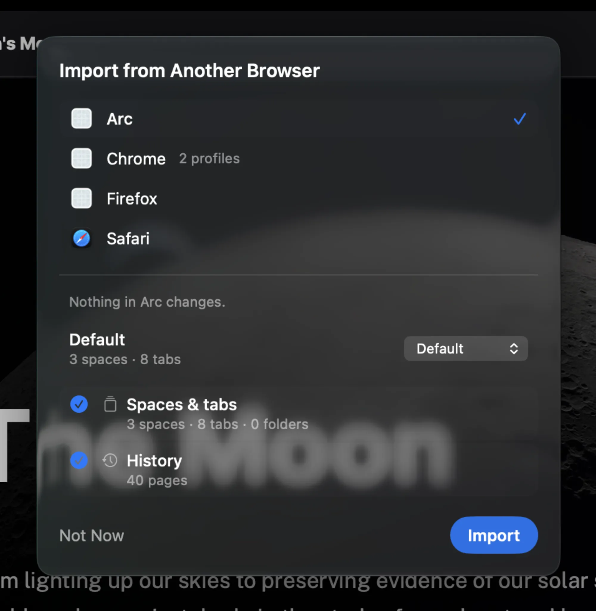

Themes
Colour, glass and grain for every space, live as you edit.

Free for Mac
A browser that stays out of your way.
Free and open source. macOS 26 on Apple silicon.

Spaces
Work, home and side projects each keep their own tabs, pins and colour. Swipe to move between them.
Command bar
Press ⌘T to search, open a page or jump to a tab you already have.
Colour, glass and grain for every space, live as you edit.

4
Split the window and drag a pane to re-tile.
Hold ⌃⇥ to flip back through tabs, across spaces.

Type what you want to change.

0
Ads and trackers blocked out of the box. History stays on your Mac.
GPL
Read every line on GitHub.
Moving from Arc
Artemis brings your Arc spaces and tabs over in one step. Chrome, Firefox and Safari too.
